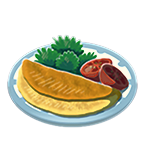
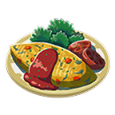
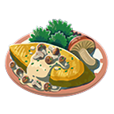
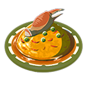

Traveller's Guide to Omelets
Omelets, the breakfast of champions. Simple and elegant, these tasty
breakfast items are a great way to set your day up for success.
Here I'll show you a few variations that you can use to spice up your omelet.
All omelets are created like any recipe in hyrule.
Instructions
- Select ingredients from your pack.
- Combine ingredients in cooking pot.
Omelet

The basic omelet is simple enough. All you need is an egg. It's what you can add
to an omelet that really makes this breakfast item stand out.
Ingredients
Vegetable Omelet

One of the simplest things that you can do to spice up your omelet is add some vegetables.
When adding other ingredients such as vegetables or plants you will need to saute them beforehand.
Ingredients
- Bird Egg
- Goat Butter
- Rock Salt
- One of the following:
- Big Hearty Radish
- Endura Carrot
- Fortified Pumpkin
- Hearty Radish
- Sun Pumpkin
- Swift Carrot
- Armoranth
- Blue Nightshade
- Cool Safflina
- Electric Safflina
- Hyrule Herb
- Mighty Thistle
- Silent Princess
- Stambulb
- Sundelion
- Swift Violet
- Warm Safflina
Mushroom Omelet

Mushroom are another fantastic addition to any omelet. There are a lot of edible mushrooms in Hyrule so go
wild
and find your favorites.
Ingredients
- Bird Egg
- Goat Butter
- Rock Salt
-
One of the following:
- Big Hearty Truffle
- Brightcap
- Chillshroom
- Endra Shroom
- Hearty Truffle
- Hylian Shroom
- Iron Shroom
- Razorshroom
- Rushroom
- Silent Shroom
- Skyshroom
- Stemella Shroom
- Sunshroom
- Zapshroom
Crab Omelet with Rice

For those who are feeling hungry and adventerous there is the Crab Omelet served over a bed of rice.
Ingredients
- Hylian Rice
- Bird Egg
- Rock Salt
-
One of the following:
- Ironshell Crab
- Razorclaw Crab
- Bright-Eyed Crab